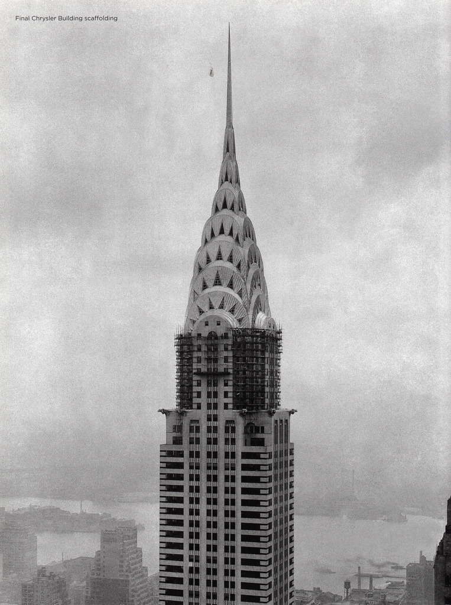
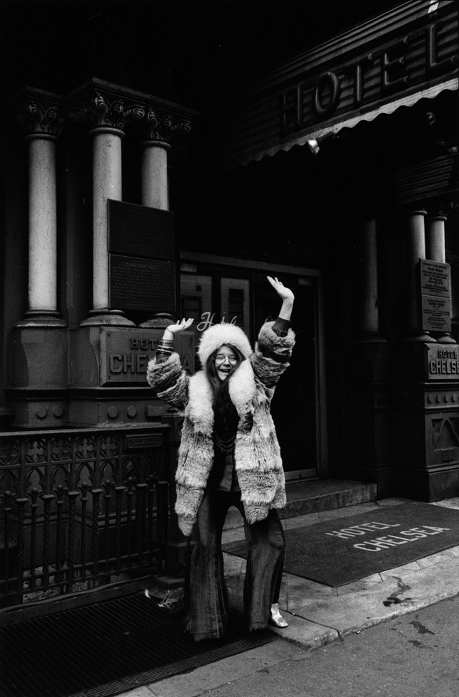
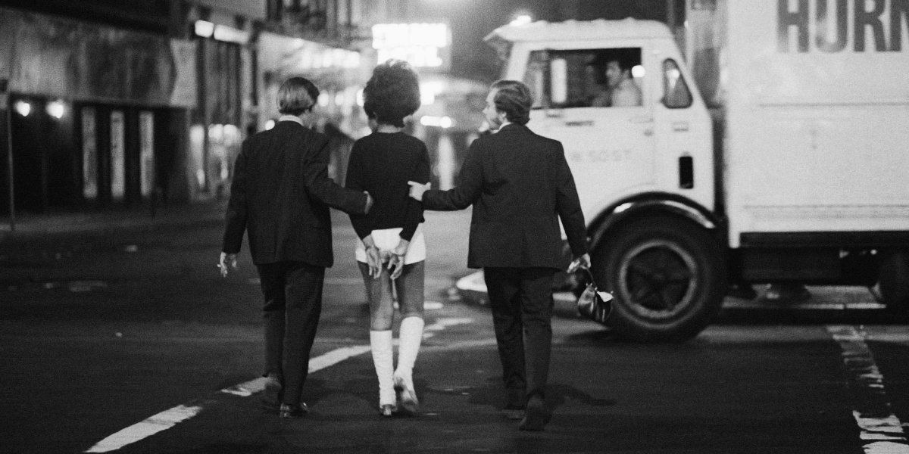
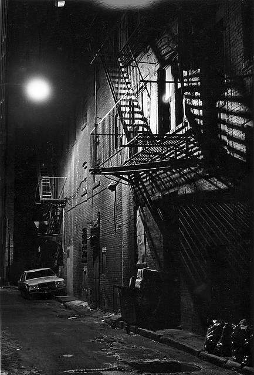
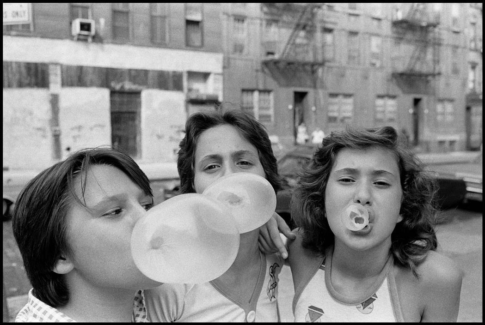

Gay “Be-In” in Central Park, 1970.
Gay “Be-In” in Central Park, 1970.

On a ferry in New York Harbor, looking at lower Manhattan, 1950
Alfred Eisenstaedt
Amsterdam Ave and 73rd St, 1949.

The old in-and-out. 1970s style.

Subway token machines, 1970s.
Brooklyn Bridge / Worth Street station, 1970s.

Waiting for the 6 train.

New York City, 1934

.

The second best photo ever taken.

Four people all listening to their Walkmans, 1981. That old lady looks pretty bad-ass. I bet she’s got some Grandmaster Flash crankin’ through those headphones.

I don’t remember this, but apparently New York Telephone would give you all the entertainment info you needed for the cost of a local phone call. Circa 1980. Let the good times roll.

During the 1966 transit strike, Brooklynites hoofed it to their Manhattan jobs.
Complete what???

Beautiful old subway map.

The Chrysler Building (William Van Allen) nearing completion in early 1930. View looking northeast from Lincoln Building.
Photo: Unknown.
Source: David Stravitz “New York, Empire City 1920-1945" (New York. Harry N. Abrahams, Inc. 2004).
Pussycat Cinema, 1980s. (50th and Broadway.) That dude soooo wants to go in…

96th and Columbus, 1980s.

Avenue A, 1989.
Soldiers and Sailors Monument in Riverside Park. This perspective makes the park look much more park-like than it really is.

Riding the RR train in the 80s.

Janis Joplin in front of the Chelsea Hotel, NYC, 1969 (by David Gahr)

Upper west side rooftop, 1936.
Blondie at CBGB’s

The Belmore Hotel. Lexington Ave and 25th Street.

Busting a hooker. Times Square in the 70s.

Zephyr and Mare, 1981, 4 train.

Lower East Side, 1983 by dclarson on Flickr.

The miracle of 1978. I watched it on TV and thought the heavens had cracked open and spilled out a dose of impossible goodness. End of the baseball season; Yankees and Red Sox tied for first place in the AL East. A one game tie-breaker to see who goes to the playoffs. Yankees down 2-0 late in the game, looking hopeless. Bucky Dent, the weakest hitter on the team, hits a monstrous home run to give the Yankees the lead and the eventual win.

The Helmsley Building in 1978, all covered in gold leaf.
Times Square, 1978. 16 inches of snow, and still falling.
1960’s New York City Garment District by Photoscream on Flickr.

Classic.


New York, 1980

New York City, 1985
Ferdinando Scianna

Dennis Stock


Susan Meiselas
A map of part of NYC in 1742.
Nassau Street near Wall Street. 1970s. Nice Caddy!
Subway 1980s

5th Ave somewhere between 79th and 72nd Streets. 1979.

Delancey Street between Allen and Eldredge. 1977.
Impala: vehicle of love. NYC, 1970s.
Stylin’. 70s Brooklyn.
Holy shit, I remember this lady! Pretty sure she was blind, and she played a really shitty accordion. She was a regular on the subways. In the 70s, us kids were taught that beggars and bums were dangerous psychopaths and that if you gave them money they’d go and shoot heroin into their feet. I don’t think this lady was hooked on H, but I never did get a good look at her feet to look for track marks.
Public school kids in line for lunch, circa 1920. P.S. 51 in Manhattan.

Painting by the wonderful and talented Max Ginsburg. Washington Square in what looks to be the 50s or 60s.
My elementary school’s playground. Pretty impressive, really, for an urban school, though there was still a hell of a lot of exposed concrete around.

Crazy Eddie, en route to becoming an electronics juggernaut in 1980.
Garbage strike, 1968.